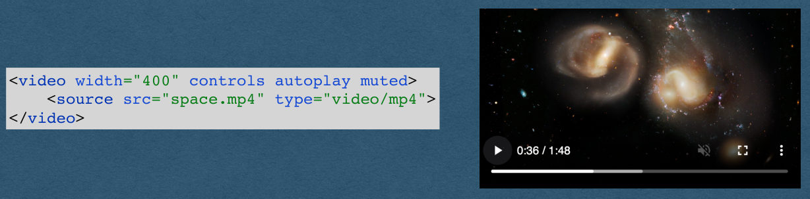
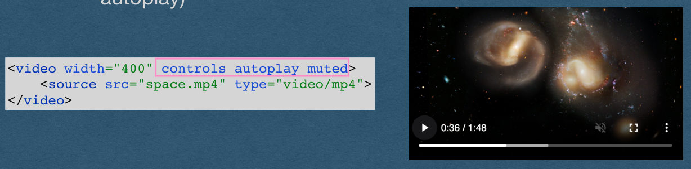
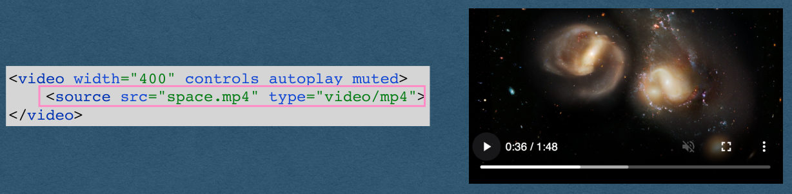
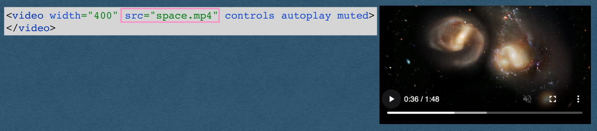
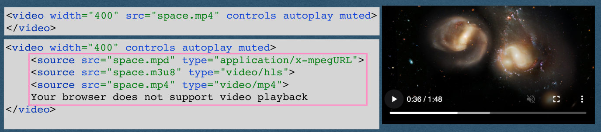

Video Processing
CSE312 — Web Development
Video
Uploading Video
- We now support file uploads
- We allow users to upload images
- How do we support video uploads?
- The same exact way as images!
- Files are just bytes
- Images and videos are handled as bytes
Displaying Video
- How do we display a video on our page?
- Not the same as images (Can’t use the
<img>element)
- Not the same as images (Can’t use the
- Use the
<video>element!
<video width="400" controls autoplay muted>
<source src="space.mp4" type="video/mp4">
</video>
Displaying Video
- Can add a variety of attributes to the video
- controls: displays the control buttons for the user
- autoplay: plays on page load [if allowed by the browser]
- muted: mute the audio (Required in Chromium for autoplay)
<video width="400" controls autoplay muted>
<source src="space.mp4" type="video/mp4">
</video>
Displaying Video
- Specify the source file in a source element
- If the MIME type is omitted, the browser might be able to sniff the type (Don’t rely on this)
- This element will request “space.mp4” just like the src of an img
<video width="400" controls autoplay muted>
<source src="space.mp4" type="video/mp4">
</video>
Displaying Video
- Using the src attribute in the video element is allowed
- This is discouraged
- Cannot specify MIME type
- Can only have one source
<video width="400" src="space.mp4" controls autoplay muted>
</video>
Displaying Video
- Using the source element allows us to specify multiple formats
- Browser will use the first source in the list that it supports
- Most browsers do not support mpd or m3u8 and will play the mp4
- Add text that is displayed for very old browsers that don’t support the HTML5 video element
<video width="400" src="space.mp4" controls autoplay muted>
</video><video width="400" controls autoplay muted>
<source src="space.mpd" type="application/x-mpegURL">
<source src="space.m3u8" type="video/hls">
<source src="space.mp4" type="video/mp4">
Your browser does not support video playback
</video>
Displaying Video
- Expectation for HW3 when a video is uploaded:
- Save the video to disk and store the filename in your DB
- Host the video at a path matching the filename
- The frontend will see the filename, request the video, then add the video bytes to a video element
<video width="400" controls autoplay muted>
<source src="space.mp4" type="video/mp4">
</video>
File Formats
File Formats
- How can we find the type of file that was uploaded?
- Check the file extension?
- File extension pros:
- Helpful for us humans to identify the type
- Let’s our OS recommend which program to use to open the file
- File extensions cons:
- They are part of the filename and can be set to anything by renaming the file (Or removed entirely)
- They are not part of the file itself (No filename when working with only the content of the file)
File Formats
- How can we find the type of file that was uploaded?
- Check the Content-Type of the part of the request?
- The browser might use the file extension to determine the Content-Type of an uploaded file
- Cannot be fully trusted
File Signatures
- The first bytes of each file contain a signature
- Identifies the type of the file
- Reliable(ish) since it’s part of the content of the file itself instead of the filename
- When the file extension can’t be trusted
- Read the first bytes of the file
- Lookup the signature of these bytes
- Common file types will always start with the same bytes
- eg. JPEG images will start with
- b’10JFIF’
- eg. JPEG images will start with
- Find the signatures for each file type you support and determine the MIME type matching the signature
Video Processing
Media Processing
- You do not always want to store user uploaded media as-is
- Users can upload anything
- What they upload might break your server
- Never trust your users!
- Even your most trustworthy users will upload large media files
- High storage cost
- Slower load times
Media Processing
- Process the media when it’s uploaded
- Convert/Compress the image/video
- Only store and serve the converted files
- Limits storage costs when compressing
- All media stored in the same format
- *Typically also limit the file size on the front end
- Can always be bypassed
Aspect Ratios
- It’s important to preserve the original aspect ratio of the media
- In our examples, we’ll have a target maximum number of pixels for the height or width
- The Process:
- Read the dimensions of the media to find the aspect ratio
- Set the larger dimension equal to your maximum height/ width
- Compute the other dimension based on the aspect ratio
- Scale the media to this new height and width
Video Processing
- Recommended (Pretty much required) to use ffmpeg
- ffmpeg is the answer for video manipulation
- Need to install ffmpeg
- Include the installation in your Dockerfile if using docker
- You may use any library you’d like to process videos
ffmpeg
- To run ffmpeg in your code
- Option 1: Make a system call
- Same as typing a command into the command line
- Build into every language
- Option 2: Use ffmpeg bindings (Library)
- Simplifies the syntax by calling methods instead of working with command line arguments
- Makes the system calls for you
ffmpeg
ffmpeg -i inputVideo.avi -f mp4 outputVideo.mp4
- Example of command line ffmpeg usage
- Converts inputVideo.avi into an mp4
- The -i flag indicates the input filename
- The -f flag indicates the output format
- The last argument is always the output filename
- No flag for the output filename
ffmpeg
ffmpeg -i inputVideo.avi -s 640x360 -f mp4 outputVideo.mp4
- We can add more arguments for more control
- Output filename is still the last argument
- The -s flag is sets the resolution of the output file
- We convert the file to 640x360